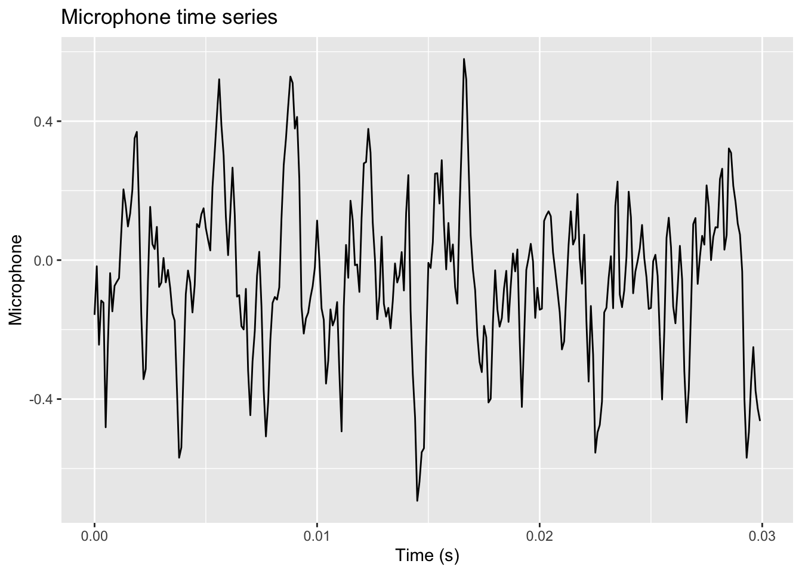
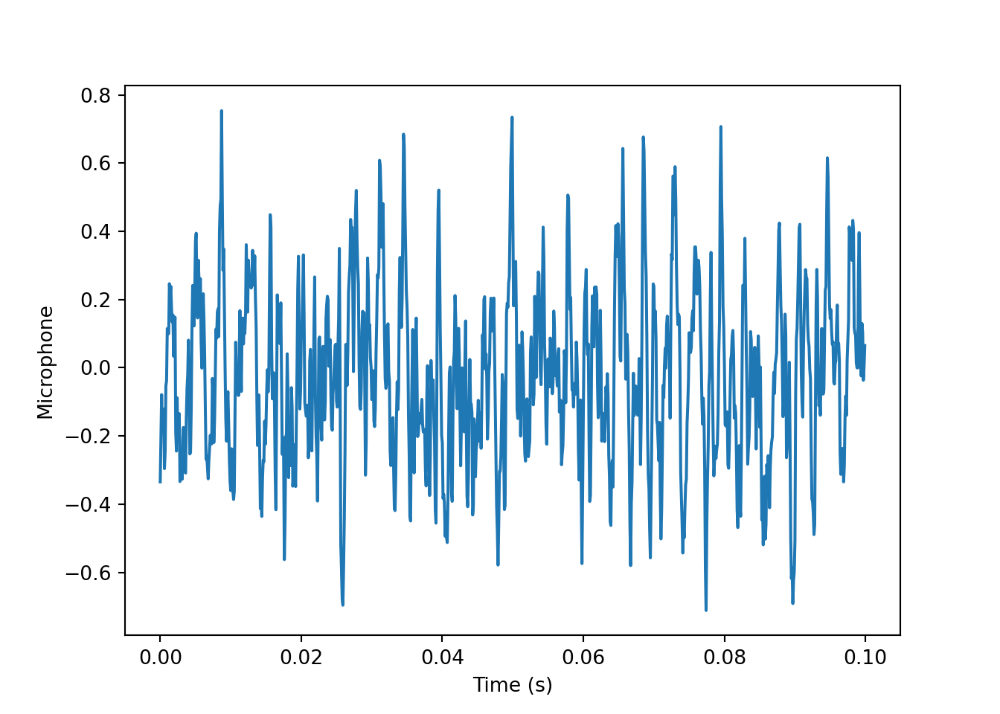
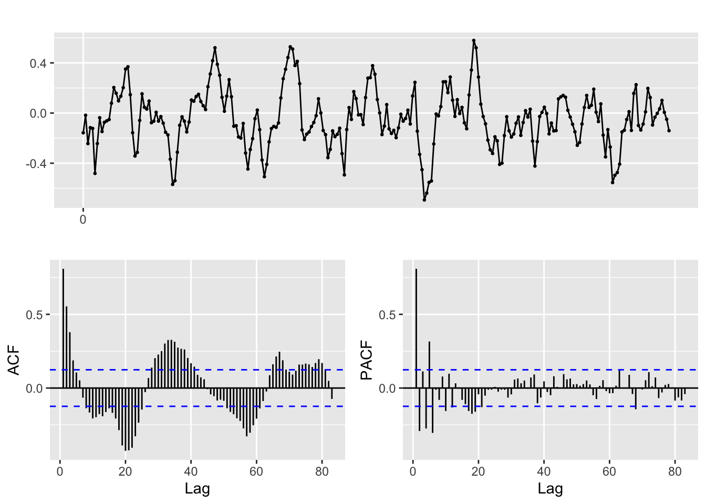
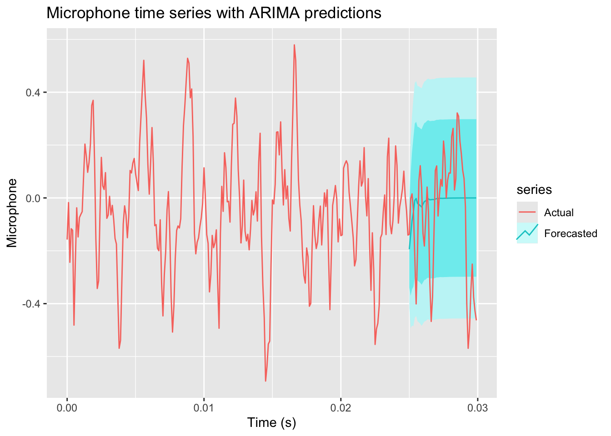

library(tidyverse)
library(mongolite)
library(glue)
options(digits = 15)
options(digits.secs = 3)Multi-agent system for smart machining, part II
Chapter I-c: exercises
1 Exercise 1: Data loading and visualization
1.1 Prerequisites
Be sure to have a look at the preliminary <exercise_01.qmd> to setup your MongoDB instance and load the example data.
1.2 Tasks
1.2.1 Queries on MongoDB Compass
We want to look at the time series represented by the microphone measurements. Each document in the acceleration collection contains 10 samples of the microphone component, each collected every 0.1 ms. We want to expand, or unwind these samples to create a single time series of the microphone measurements, with a timestamp for each sample. To do this, we can use the Aggregation tab in MongoDB Compass to create a pipeline that performs the following steps:
- project: select only the relevant fields, that is,
message.timestampandmessage.measurements.microphone - unwind: unwind the
message.measurements.microphonearray to create
In practice, you might ask the AI assistant in Compass to write the aggregation pipeline for you, by giving it the following instruction:
Write an aggregation pipeline that selects the
message.timestampandmessage.measurements.microphonefields from theaccelerationcollection, and unwinds themessage.measurements.microphonearray to create a single time series of the microphone measurements, together with the original index of the sample in the 10-sample window.
You should get the following pipeline:
[
{
$project: {
microphone:
"$message.measurements.microphone",
timestamp: "$message.timestamp"
}
},
{
$unwind: {
path: "$microphone",
includeArrayIndex: "index"
}
}
]You can save this aggregation as a named view microphone_view, and then query it as a normal collection to get the microphone time series.
1.2.2 Queries from R
We start loading some packages:
Now, using the mongolite library, write R code to query the microphone_view, and load the results in a data frame.
Using the microphone_view collection, write a query to select the microphone measurements and their corresponding timestamps, and then create a time series plot of the microphone measurements over time. Using the timestamp field (that has a millisecond resolution) and the index field (that indicates the position of the sample in the 10-sample window), you can create a new time variable that represents the time in seconds from the start of the recording, and use it as the x-axis of the plot.
m <- mongo(
collection = "microphone_view", db = "MASSM_1",
url = "mongodb://localhost:27017")
t0 <- "2011-01-01T01:10:34.780+00:00"
query <- glue(
'{{
"timestamp": {{
"$gte": {{"$date": "{t0}"}}
}}
}}'
)
df <- m$find(query=query, limit=300) %>%
as_tibble() %>%
mutate(time = round(timestamp - min(timestamp) + index * 1e-4, 4), .before = microphone) %>%
select(-index)
df %>%
ggplot(aes(x = time, y = microphone)) +
geom_line() +
labs(x = "Time (s)", y = "Microphone", title = "Microphone time series")Don't know how to automatically pick scale for object of type <difftime>.
Defaulting to continuous.
Note
Learn to exploit the aggregation pipeline and the views in MongoDB to simplify your queries and make them more efficient. For example, you can create a view that already computes the time variable, so that you can directly query it without having to do any post-processing in R or Python. The AI asistant in MongoDB Compass can help you to write the aggregation pipeline for the view, by giving it the following instruction:
Write an aggregation pipeline that selects the
message.timestampandmessage.measurements.microphonefields from theaccelerationcollection, unwinds themessage.measurements.microphonearray to create a single time series of the microphone measurements, together with the original index of the sample in the 10-sample window, and then creates a new fieldtimethat represents the time in seconds from the start of the recording, using thetimestampfield and theindexfield.
1.2.3 Queries from Python
Using the pymongo library, write Python code to perform the same queries as above, and load the results in a Pandas data frame. Then, create a plot of the Fx component over time, and a histogram of the microphone component.
For example, we could run:
from pymongo import MongoClient
import pandas as pd
from datetime import datetime
import matplotlib.pyplot as plt
client = MongoClient("mongodb://localhost:27017")
db = client["MASSM_1"]
collection = db["microphone_view"]
t0 = datetime.fromisoformat("2011-01-01T01:08:34.780+00:00")
query = {
"timestamp": {
"$gte": t0
}
}
cursor = collection.find(query).limit(1000)
df = pd.DataFrame(list(cursor))
df["time"] = (df["timestamp"] - df["timestamp"].min()).dt.total_seconds() + df["index"] * 1e-4
plt.plot(df["time"], df["microphone"])
plt.xlabel("Time (s)")
plt.ylabel("Microphone")
plt.show()
2 Exercise 2: Time series analysis
In R, using the forecast package, use forecasts::ggtsdisplay() to plot the microphone time series, together with its ACF and PACF. We also split the data into a training set (the first 250 samples) and a test set (the remaining samples), and we plot only the training set to avoid the influence of the test set on the ACF and PACF.
library(forecast)
df <- df %>% mutate(train = row_number() <= 250)
mic_train <- ts(df$microphone[df$train], start = 0, frequency = 10000)
mic <- ts(df$microphone, start = 0, frequency = 10000)
ggtsdisplay(mic_train)
Now fit an ARIMA model to the microphone time series, and use it to make predictions for the next 50 samples. Plot the original time series and the predictions together.
# Fit ARIMA model
fit <- auto.arima(mic_train, trace=TRUE)
Fitting models using approximations to speed things up...
ARIMA(2,0,2) with non-zero mean : Inf
ARIMA(0,0,0) with non-zero mean : -31.7894855250263
ARIMA(1,0,0) with non-zero mean : -295.699298075366
ARIMA(0,0,1) with non-zero mean : -288.291239233143
ARIMA(0,0,0) with zero mean : -23.9641657495807
ARIMA(2,0,0) with non-zero mean : -316.531585104261
ARIMA(3,0,0) with non-zero mean : -321.702793724726
ARIMA(4,0,0) with non-zero mean : -343.410054544896
ARIMA(5,0,0) with non-zero mean : -376.461721374649
ARIMA(5,0,1) with non-zero mean : -431.690543110953
ARIMA(4,0,1) with non-zero mean : -435.098894362489
ARIMA(3,0,1) with non-zero mean : -403.184498059704
ARIMA(4,0,2) with non-zero mean : Inf
ARIMA(3,0,2) with non-zero mean : -408.095305191577
ARIMA(5,0,2) with non-zero mean : -429.538589091546
ARIMA(4,0,1) with zero mean : -436.166669149037
ARIMA(3,0,1) with zero mean : -402.825313057376
ARIMA(4,0,0) with zero mean : -342.808649664053
ARIMA(5,0,1) with zero mean : -430.756081954111
ARIMA(4,0,2) with zero mean : Inf
ARIMA(3,0,0) with zero mean : -322.52965660483
ARIMA(3,0,2) with zero mean : -404.348027577472
ARIMA(5,0,0) with zero mean : -377.505849783354
ARIMA(5,0,2) with zero mean : -428.793009194716
Now re-fitting the best model(s) without approximations...
ARIMA(4,0,1) with zero mean : Inf
ARIMA(4,0,1) with non-zero mean : Inf
ARIMA(5,0,1) with non-zero mean : Inf
ARIMA(5,0,1) with zero mean : Inf
ARIMA(5,0,2) with non-zero mean : Inf
ARIMA(5,0,2) with zero mean : Inf
ARIMA(3,0,2) with non-zero mean : Inf
ARIMA(3,0,2) with zero mean : Inf
ARIMA(3,0,1) with non-zero mean : Inf
ARIMA(3,0,1) with zero mean : Inf
ARIMA(5,0,0) with zero mean : -370.453908873365
Best model: ARIMA(5,0,0) with zero mean # Forecast next 20 samples
forecasted <- forecast(fit, h=50)
# Plot original time series and predictions
# autoplot(mic, series="Actual") +
ggplot() +
autolayer(forecasted, series="Forecasted") +
autolayer(mic, series="Actual") +
labs(x = "Time (s)", y = "Microphone", title = "Microphone time series with ARIMA predictions")
Tip
Try the same analysis on different time frames. Also try to analyze the ACF and PACF of the time series and fit a custom ARIMA model, instead of using auto.arima() (see the forecast::Arima() function), to see if you can improve the predictions.
Tip
Try and find libraries and functions to perform the same analysis in Python. For example, you can use the statsmodels library to plot the ACF and PACF, and to fit an ARIMA model. You can also use the pmdarima library to perform automatic ARIMA fitting, similar to auto.arima() in R.